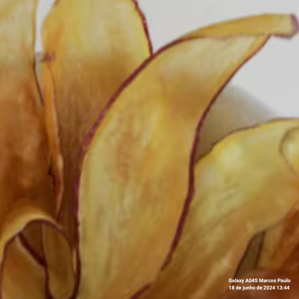
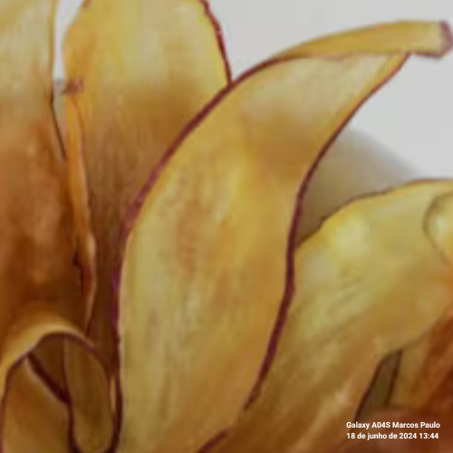
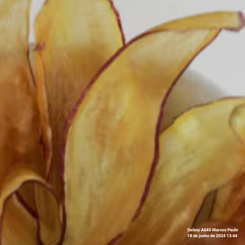

Ingredientes
4 batatas grandes
2 colheres de sopa de azeite de oliva
Sal a gosto
Modo de Preparo
Preparação das batatas: Lave bem as batatas e corte-as em fatias finas.
Secagem: Seque bem as fatias de batata com papel toalha para remover o excesso de umidade.
Tempero: Em uma tigela grande, misture as fatias de batata com azeite de oliva e sal, garantindo que todas as fatias estejam cobertas uniformemente.
Assar: Preaqueça o forno a 200°C. Forre uma assadeira com papel manteiga e distribua as fatias de batata em uma única camada.
Forno: Asse por aproximadamente 20-25 minutos, virando as fatias na metade do tempo, até que fiquem crocantes e douradas.
Finalização: Retire do forno e deixe esfriar por alguns minutos antes de servir. Os chips ficarão mais crocantes conforme esfriam.
Produtor da Receita
Nome: Chef Carlos
Descrição: Chef especializado em petiscos e snacks.
© 2024 Receitas
 
